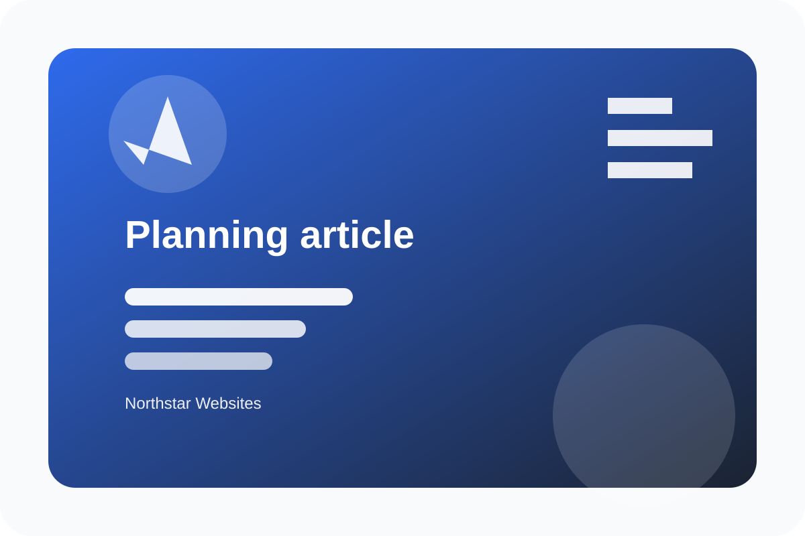

Planning
What to Prepare Before a Website Redesign
A practical list of goals, content, examples, and decision points that makes the first conversation more useful.
Read guideServices
Northstar Websites can plan, design, build, connect, launch, and support a website as a single engagement or through a focused set of improvements.
Services
Each service can stand alone or combine into a full planning, design, development, launch, and support engagement.
Clarify goals, audience needs, content priorities, and conversion paths before design starts.
Explore serviceCreate polished, responsive interfaces that make services easy to understand and act on.
Explore serviceBuild maintainable WordPress themes with clean templates, local assets, and practical editor support.
Explore serviceConnect forms, content flows, analytics-ready events, and operational pages without adding runtime clutter.
Explore servicePrepare the handoff, document key workflows, and support updates after the site goes live.
Explore serviceRefine important pages so visitors can compare services, ask better questions, and contact with confidence.
Explore serviceProcess
Share the business context and what needs to improve.
Clarify audiences, content, site structure, and constraints.
Turn priorities into pages, sections, and conversion paths.
Create responsive layouts with accessible states and clear hierarchy.
Build WordPress templates, assets, forms, and editor-ready patterns.
Review, document, refine, and support the handoff.
FAQ
Northstar Websites starts with a focused discovery conversation about goals, audiences, content, current pain points, and what the website needs to help visitors do.
Yes. Some projects are targeted improvements to structure, content, forms, accessibility, or design consistency rather than a full rebuild.
Useful context includes your primary services, important pages, examples of sites you admire, current content status, preferred timeline, and any tools the site must support.
The theme is structured to support clear service content. Project work can include content planning, page outlines, and editing guidance without inventing unsupported business claims.
Layouts, navigation, forms, cards, and footer sections are designed mobile-first so the experience remains usable on small screens.
Launch support can include handoff notes, editor guidance, small follow-up adjustments, and recommendations for responsible ongoing maintenance.
Submissions are stored privately in WordPress admin areas with nonce validation, sanitization, exports, and owner notification support.
Next step
Use the contact form to share what is changing, what is confusing visitors, and what the next version of the site needs to support.